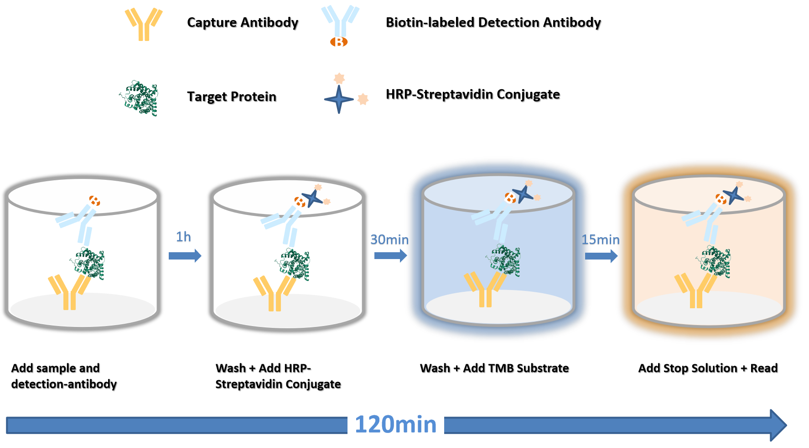
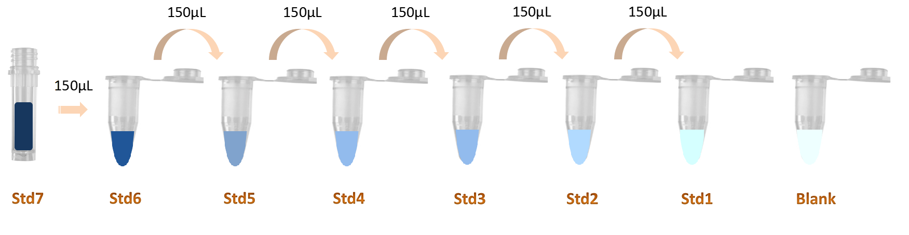

| 货号： | {{CATALOG_NO}} |
| 规格： | {{SPEC}} |
| 灵敏度： | {{SENSITIVITY}} |
| 检测范围： | {{DETECT_RANGE}} |
一、背景信息
二、检测原理
三、试剂盒组件及保存
四、需自备实验辅助器材
五、实验注意事项
六、样本预处理
七、试剂工作液配制
八、实验步骤
九、数据分析
十、试剂盒典型参数
十一、参考文献
{{BACKGROUND}}

本试剂盒采用双抗体夹心法。试剂盒中的酶标板已预先包被抗体。
将标准品/待测样本和生物素标记的检测抗体同时加入各对应孔，混合孵育，形成双抗体夹心结构。洗去未结合的成分，加入HRP-链霉亲和素(SABC)孵育，再次洗去未结合的成分，然后加入TMB显色底物，TMB在辣根过氧化物酶(HRP)的催化下由无色缓慢变深为蓝色，及时加终止液，液体变成黄色后在 450 nm 波长测定吸光度OD值。
标准品/样本中目的抗原浓度 与 OD450值之间呈正比，通过绘制标准曲线将样本OD值代入标曲方程计算样本中目的抗原的浓度。
未拆封的试剂盒可在4℃保存一个月，超出时间，请拆开试剂盒按照下表中的条件分别保存各组分。
| 组件名称 | 规格({{SPEC}}) | 开启后保存条件 |
|---|---|---|
| 预包被酶标板(可拆卸) Precoated Microplate (Dismountable) | 8孔×12条 | 将剩余板条和未复溶的标准品放回铝箔袋中，加入干燥剂密封保存。-20°C，可存放6个月。 |
| 冻干标准品 Lyophilized Standard | 2支 | 2-8°C可存放6个月 (TMB底物需避光) |
| 生物素化抗体 100X Biotin-labeled Antibody 100X | 1支60ul | |
| HRP-链霉亲和素(SABC)100X HRP-Streptavidin Conjugate (SABC) 100X | 1支120ul | |
| 样本稀释液 Sample Dilution Buffer | 1瓶 20ml | |
| 抗体稀释液 Antibody Dilution Buffer | 1瓶 10ml | |
| SABC稀释液 SABC Dilution Buffer | 1瓶 10ml | |
| TMB底物 TMB Substrate | 1瓶 10ml | 2-8°C可存放6个月 (TMB底物需避光) |
| 反应终止液 Stop Solution | 1瓶 10ml | |
| 浓缩洗涤液 25X Wash Buffer 25X | 1瓶 30ml | |
| 覆膜 | 5张 | |
| 说明书 | 1份 | |
| 质检报告COA | 1份 |
酶标仪(可读取波长450nm和620nm)
37°C恒温箱
自动洗板机（手洗亦可，需自备多道移液器）
单道(0.5-10μL, 5-50μL, 20-200μL, 200-1000μL)和多道移液器(使用前需校准)。
无菌EP管（用于标准品和样本稀释）
一次性移液器枪头
吸水纸及加样槽
超纯水或去离子水
烧杯和量筒
100 mM PMSF(phenylmethanesμLfonyl fluoride) 存储液 (1 g PMSF溶于57 mL异丙醇)，样本需要裂解时使用
标曲绘制软件，如：ELISA Calc、Graphpad Prism等
试剂严禁混用：请勿将其它批次、货号、厂商试剂盒的试剂用于本试剂盒。
实验操作细节：
1. 试剂及样本保存。试剂盒组件请按照要求保存以免活性下降，如有需要可单独采购对应组件。样品最佳保存条件：2-8°C保存应小于 5天，-20°C不应超过 6 个月，-80°C不应超过 2年，超过以上时间应保存在液氮中。冻存的标本融化时，为了减少冰晶(0°C)对样品的破坏，应采用15-25°C水浴快速融化，融化后离心除去沉淀物，混匀后用于检测。
2. 实验前准备。请提前备好下一步所需试剂，洗板后及时加入板孔，防止板孔干燥致高背景。
3. 标曲设置。每次检测都应同时绘制标准曲线作为参照。
4. 加样操作。标准品、样本以及不同试剂加样时，注意更换枪头、加样槽以免交叉污染，枪头避免接触微孔板的内表面。加样时间控制在3min内以防板孔干燥。
5. 孵育。每次孵育在推荐温度下完成，贴覆膜以防板孔中液体的蒸发。
6. 洗板。推荐机器洗板，以保证最佳CV值。手工洗板，枪头或滴管切勿接触酶标板孔。不充分的洗涤或污染容易造成假阳性和高背景。
7. 显色强度控制。推荐使用OD620nm进行终止前蓝色强度监控，当标曲颜色最深孔OD620nm为0.6-0.8时，即刻终止显色变为黄色，对应的OD450nm为2.0-2.5，此时试剂盒分辨率最佳。
8. 实验设计：若样本类型特殊，无参考数据，建议做预实验验证其适用性。正常样本常用于对照，说明书（试剂盒典型参数部分）提供部分正常样本参考数据和稀释比；实验组包括疾病、造模或给药样本等，待测物表达情况常和正常样本相差较大，建议以正常样本稀释比为中心做4-5个连续10倍梯度稀释预实验。
9. 个人安全防护：实验过程中，请穿实验服，戴口罩、手套等，特别是检测血液或者其他体液样品时，请按生物实验室安全防护条例执行。
血清：全血标本室温放置 2 小时或 2-8°C过夜自然凝固后1000×g 低温离心15 min，取上清立即使用或分装后-20℃存放，避免反复冻融。避免使用溶血，高血脂样品。
血浆: 可用EDTA或肝素作为抗凝剂，标本采集后1000×g 低温离心15 min，立即使用或分装后-20℃存放，避免反复冻融。避免使用溶血，高血脂样品。
细胞上清: 收集细胞培养液，500×g 离心5 min，除去杂质及细胞碎片，取上清立即使用或分装后-20℃存放，避免反复冻融。
组织（细胞）匀浆：取适量组织块，于预冷的 PBS（0.01M，pH7.0-7.2）中清洗去除血液（匀浆中裂解的红细胞会影响测量结果），称重后将组织剪碎，然后加入一定体积的裂解液（一般按照 1:9 的质量体积比，具体体积可根据实验需要适当调整，并做好记录，推荐在裂解液中加入蛋白酶抑制剂PMSF）并转移到玻璃匀浆器中，在冰上充分研磨；为了进一步裂解组织细胞，可对匀浆液进行超声破碎处理（超声破碎过程中注意冰水浴降温，推荐使用3mm探头，超声功率选择150-300W，超声2s，暂停20s，循环10次以上）。最后将制备好的匀浆液于 5000×g 离心 5-10 分钟，取上清即可检测。 样本为细胞匀浆时，先按照常规流程收集细胞，使用预冷的PBS清洗去除残留培养基，再按上面程序裂解，裂解浓度为5×106细胞数目/mL裂解液以上。样本可立即检测或分装保存在-20°C，避免反复冻融。
尿液：请收集清晨第一次尿液（中段尿），或 24小时尿液，2000×g 离心 15 分钟后收集上清，立即检测或分装保存在-20°C，避免反复冻融。
唾液：用唾液样本采集管收集样本，然后于 2-8°C, 1000×g 离心 15 分钟，取上清即可检测，或分装保存在-20°C，避免反复冻融。
其它生物样品：请 1000×g 离心 20 分钟，取上清即可检测。
按当次实验所需提前20分钟取出所需的酶标板条及标准品，平衡到室温(18-25°C)后使用。
1、洗涤液（1×）:
如果浓缩洗涤液（25×）有晶体析出，请先在40°C水浴中加热至晶体全部溶解，混匀后使用。按1:25比例，使用超纯水或去离子水（电导率小于2μS/cm或电阻率大于18MΩ）进行稀释，如取30mL 浓缩洗涤液（25×），加入720mL超纯水混匀，得到750mL洗涤液（1×）。配制好的洗液，最好当天使用完，用不完的，可以保存在2-8°C，不超过48小时。
2、标准品:
2.1. 标准品(标记为STD7管，浓度为{{STD_TOP}})的复溶：开盖前瞬时离心，加入500μL样本稀释液到标准品管中，旋紧管盖，室温静置2分钟，轻柔上下颠倒数次使标准品充分复溶(或加入500μL样本稀释液，静置1-2分钟后，用低速涡旋仪混匀3-5秒)。1000×g低速离心1分钟。
2.2. 标准品2倍倍比梯度稀释：另取7个EP管，分别标记为STD6、STD5、STD4、STD3、STD2、STD1和Blank。先在每个EP管中分别加入150μL的样本稀释液。再取150μL STD7管标准品溶液加入到STD6管中，低速涡旋震荡使充分混合。再取150μL STD6管标准品溶液到STD5管中，充分混合。再取150μL STD5管标准品溶液到STD4管中，充分混合，依此循环操作，最后 STD1管标准品溶液为300μL，无需取出。注意Blank EP管中仅有样本稀释液。此时，这7个EP管中标准品的浓度分别为{{STD_DILUTION_SERIES}}。

3、生物素化抗体工作液（1×）：
3.1. 计算所需工作液（1×）的总体积：50ul/孔×孔数，准备比总体积多50ul-100ul的量。现用现配，不适合长期存放。
3.2. 开盖前瞬时离心，按1:100的比例用抗体稀释液稀释生物素化抗体（100×），充分混匀。如取10ul生物素化抗体（100×）加入到990ul抗体稀释液中，得到1000ul生物素标记抗体工作液（1×）。
4、HRP-链霉亲和素(SABC)工作液：
4.1. 计算所需工作液（1×）的总体积：100ul/孔×孔数，准备比总体积多100ul-200ul的量。现用现配，不适合长期存放。
4.2. 开盖前瞬时离心，按1:100的比例用SABC稀释液稀释浓缩SABC（100×），充分混匀。如取10ul浓缩SABC（100×）加入到990ul SABC稀释液中，得到1000ul HRP-链霉亲和素(SABC)工作液（1×）。
取标准品、空白孔和样本各自复孔的平均OD值，减去空白孔的OD值作为校正值。
以标准品浓度为横坐标，OD450值为纵坐标，使用标曲绘制软件（如：ELISA Calc、Graphpad Prism等）进行曲线拟合，拟合推荐使用四参数逻辑方程（4PL）或五参数逻辑方程（5PL）、双对数、半对数、直线等，具体曲线选择应综合相关系数R2值（R2越接近1，拟合效果越好）和曲线趋势（总体光滑，曲线斜率始终为正）。
将样本的OD值代入标准曲线方程，即可计算得到样本工作液的拟合浓度，乘以相应的稀释倍数得到样本的实测浓度。
1、参考标曲
实验者的操作及当时的实验环境等因素都会影响每次实验OD值，以下实验数据和标准曲线仅供参考。
|
{{CAL_TABLE_CHART}} |
2、参考样本值
以下表格为本试剂盒针对健康样本推荐的稀释比例，仅供参考。(NA为无确切参考值)
| 样本类型 | 推荐稀释比例 | 参考含量 |
|---|
3、精密度
板内精密度：含低、中、高3种不同浓度样本分别在板内重复测定20次。
板间精密度：含低、中、高3种不同浓度样本分别在板间重复测定20次。
| 类别 | 板内精密度 | 板间精密度 | ||||
|---|---|---|---|---|---|---|
| 样本 | 1 | 2 | 3 | 1 | 2 | 3 |
| 数量 | 20 | 20 | 20 | 20 | 20 | 20 |
4、回收率
样本稀释后，加入一定量的{{SAMPLE_NAME}}，分别配制成标曲范围内低、中、高3种不同浓度，计算不同基质样本中的加标回收率。
| 样品类型 | 均值 (%) | 范围 (%) |
|---|
5、灵敏度
用20个重复的零孔平均OD值加上两倍标准差得到的OD值代入标准曲线拟合出对应的浓度值，此试剂盒中{{SAMPLE_NAME}}的灵敏度为{{SENSITIVITY}}。
6、线性
使用样本稀释液将含或添加有高浓度{{SAMPLE_NAME}}的各基质样本分别进行标曲范围内的2倍倍比梯度稀释，计算各稀释比下的回收率范围。
| 样品类型 | 1:2 | 1:4 | 1:8 |
|---|
7、特异性
试剂盒经验证和同家族蛋白、互作蛋白及其它种属同靶标蛋白无明显交叉反应，交叉试验验证浓度为{{CROSS_REACT_CONC}}。
8、稳定性
未拆封的试剂盒在37°C和2-8°C进行稳定性实验，得出稳定性数据。
| 试剂盒(n=5) | 37°C一个月 | 2-8°C六个月 |
|---|---|---|
| 平均值 (%) | 80 | 95-100 |
9、标准品校准
试剂盒免疫测定使用重组表达的BioQuanti®重组{{SAMPLE_NAME}} (指标名)进行校准。
限于现有科学认知及技术水平，尚不能对所有原料进行全面的分析，本产品可能存在一定的质量风险。
本试剂盒已在最大程度上去除/降低了生物样本中的内源性干扰因素，但仍有可能存在未知干扰因素。
本试剂盒未与其他厂家同类试剂盒或不同分析方法检测数据进行对比，所以不排除检测结果不一致的情况。
本公司只对试剂盒本身质量负责，不对使用试剂盒所造成的样本消耗负责，使用前请充分考虑样本可能的使用量，预留充足的样本。
实验结果与试剂的有效性、实验操作及当时的实验环境等因素密切相关；即使是相同人员操作也可能在两次独立实验中得到不同的结果，为保证结果的重现性，需要控制实验过程中每一步的操作。
本试剂盒生产过程中严格质控，最终检验合格后发货。然而，因为运输条件、实验设备差异等因素影响，用户检测结果可能跟出厂数据不一致。不同批次间试剂盒间的差异也可能来自上述原因。
本试剂盒仅供科学研究使用，不得用于临床或其他用途。